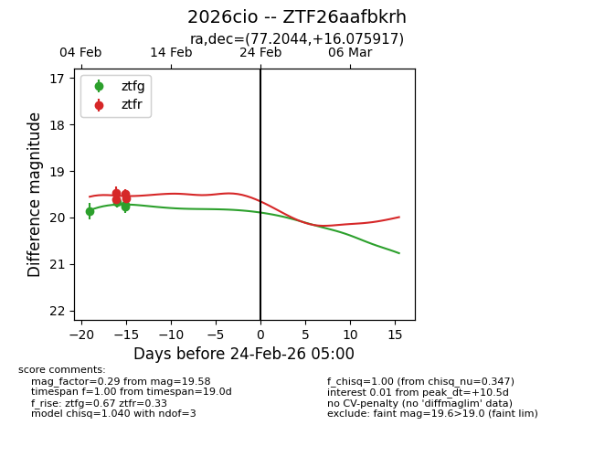
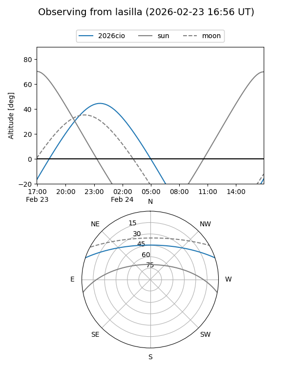
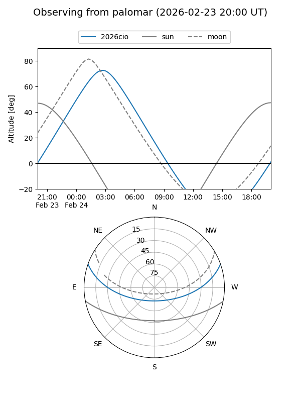

2026cio
Target 2026cio at 2026-02-24 09:08
Aliases and brokers:
FINK: link
Lasair: link
ALeRCE: link
TNS: link
YSE: link
alt names
ZTF26aafbkrh (ztf,fink_ztf)
2026cio (tns,yse)
Coordinates:
equatorial (ra, dec) = 77.2044,+16.07592
equatorial (HMS+DMS) = 05:08:49.04,+16:04:33.30
galactic (l, b) = (186.2050,-14.12207)
Flags:
Photometry:
last ztfg=19.73, ztfr=19.58
4 ztfg, 4 ztfr detections
Lightcurve

Visibility


Additional plots